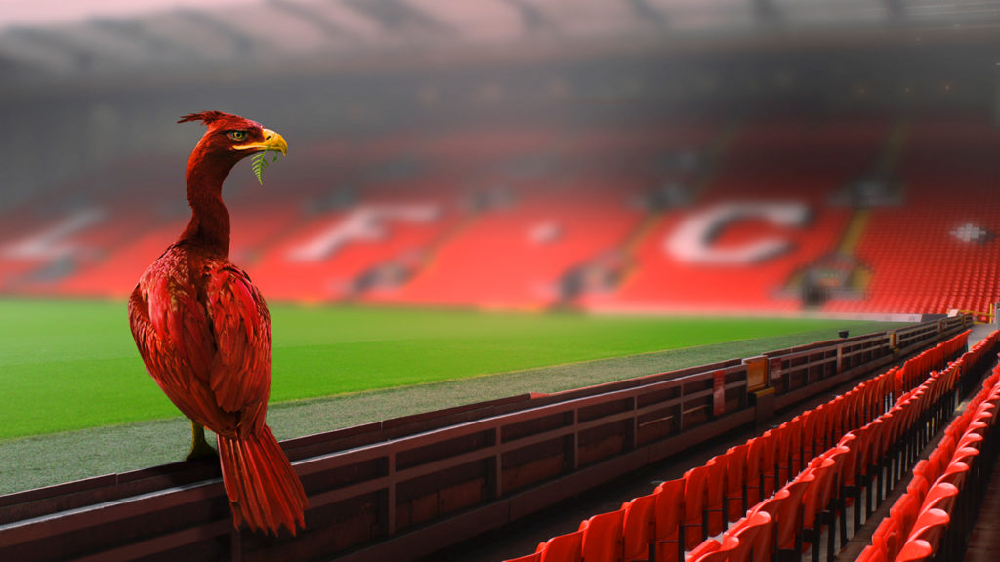

Liver Bird เป็นสัญลักษณ์ที่สำคัญและมีความหมายลึกซึ้งในเมืองลิเวอร์พูล, ประเทศอังกฤษ โดยมีรูปร่างเป็นนกที่บินออกจากท้องทะเล
ซึ่งถือเป็นตัวแทนของการเติบโตและความมั่นคงของเมืองนี้ ตำนานกล่าวว่า Liver Bird
ถูกออกแบบให้เป็นสัญลักษณ์ของการปกป้องเมืองจากภัยอันตรายต่าง ๆ
นอกจากนี้ยังสะท้อนถึงประวัติศาสตร์ของเมืองที่เกี่ยวข้องกับการค้าทางทะเลและอุตสาหกรรมที่เฟื่องฟูในสมัยก่อน
Liver Bird ไม่เพียงแค่เป็นสัญลักษณ์ของเมืองลิเวอร์พูล แต่ยังเป็นภาพแทนของความรุ่งเรืองและจิตวิญญาณที่แข็งแกร่งของชาวเมืองลิเวอร์พูลในทุกยุคสมัย
ในปัจจุบัน Liver Bird เป็นที่รู้จักกันอย่างกว้างขวางทั้งในเมืองลิเวอร์พูลและทั่วโลก โดยเฉพาะในโลโก้ของทีมฟุตบอลลิเวอร์พูล
ซึ่งเป็นหนึ่งในสัญลักษณ์ที่โดดเด่นที่สุดที่แสดงถึงความภาคภูมิใจของเมืองและความสำเร็จในหลายด้าน ไม่ว่าจะเป็นเศรษฐกิจ, กีฬา, หรือวัฒนธรรม